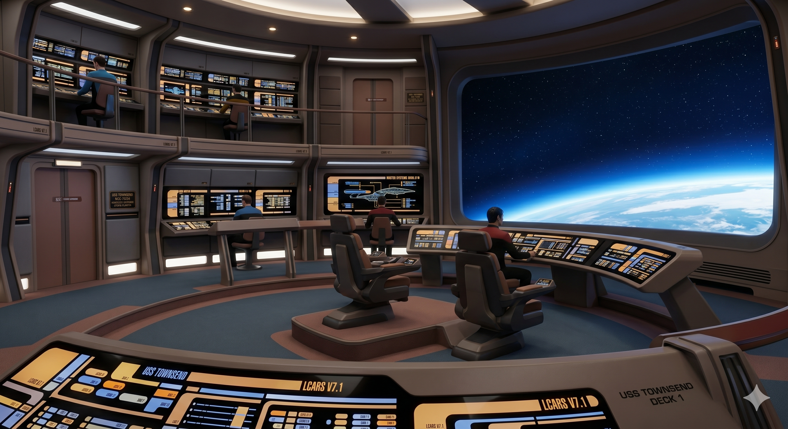

PRIMARY DATA RECORD
NCC-75234LATE 2370s RUN BLOCK
420 × 195 × 68 ML / W / H
22COMPACT VERTICAL PLAN
240CREW / SCIENCE
WARP 9.7SUSTAINABLE
WARP 9.97512 HR LIMIT
LCARS 7.1 // STARFLEET DATABASE
STARFLEET VESSEL ARCHIVE // COMMAND ACCESS
CLASSIFICATION // LIGHT EXPLORER
Built for deep-space cartography and tactical deterrence, the USS Townsend combines flowing late-24th-century hull geometry with sustained high-warp performance.
NCC-75234LATE 2370s RUN BLOCK
420 × 195 × 68 ML / W / H
22COMPACT VERTICAL PLAN
240CREW / SCIENCE
WARP 9.7SUSTAINABLE
WARP 9.97512 HR LIMIT
PROPULSION SYSTEM // ONLINE
Dynamic field control reshapes warp geometry electronically, removing the need for physically articulating nacelles while preserving sustained high-warp efficiency.

Curved command center with central command well and panoramic viewscreen.
Panoramic lounge at the forward tip of the primary hull.
Comfortable long-deployment quarters with replicator alcoves.
MISSION PROFILE // LONG-RANGE ASSIGNMENT
Optimized for deep-space cartography, anomaly investigation and diplomatic support, with sufficient tactical capacity for independent operations.